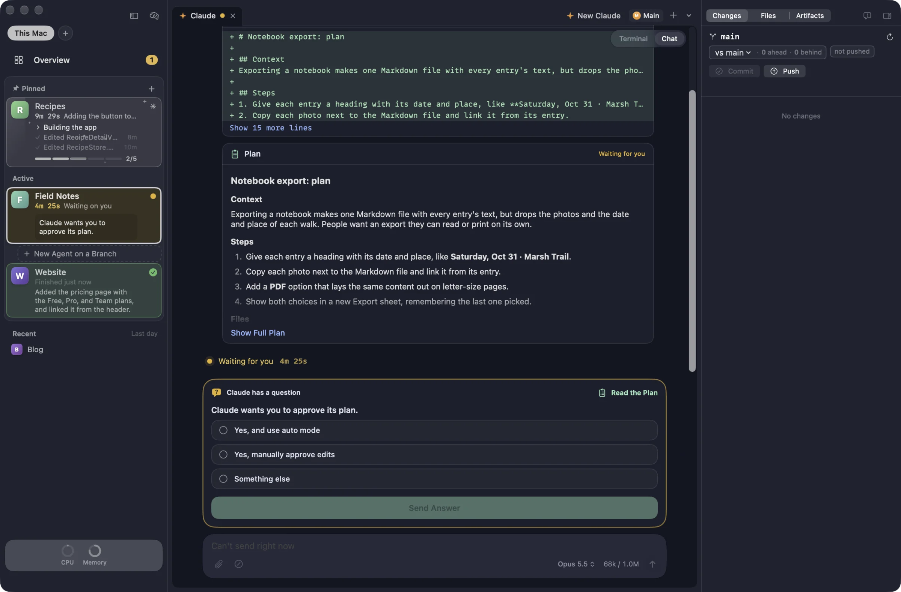
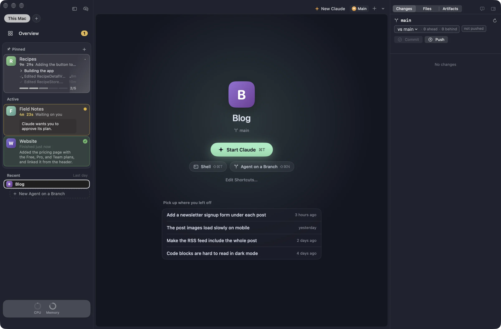
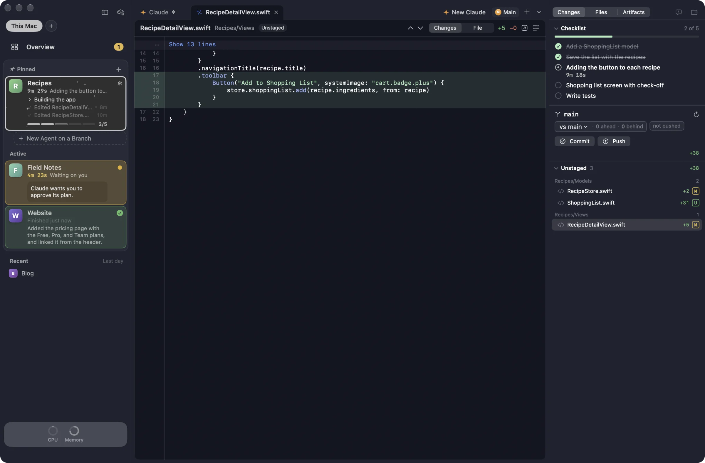
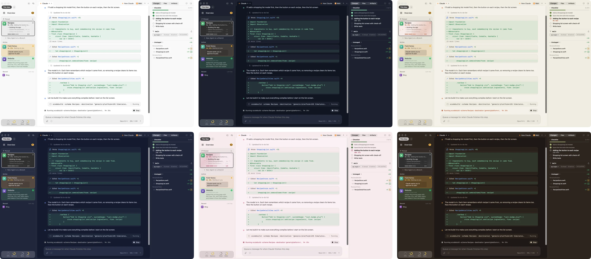
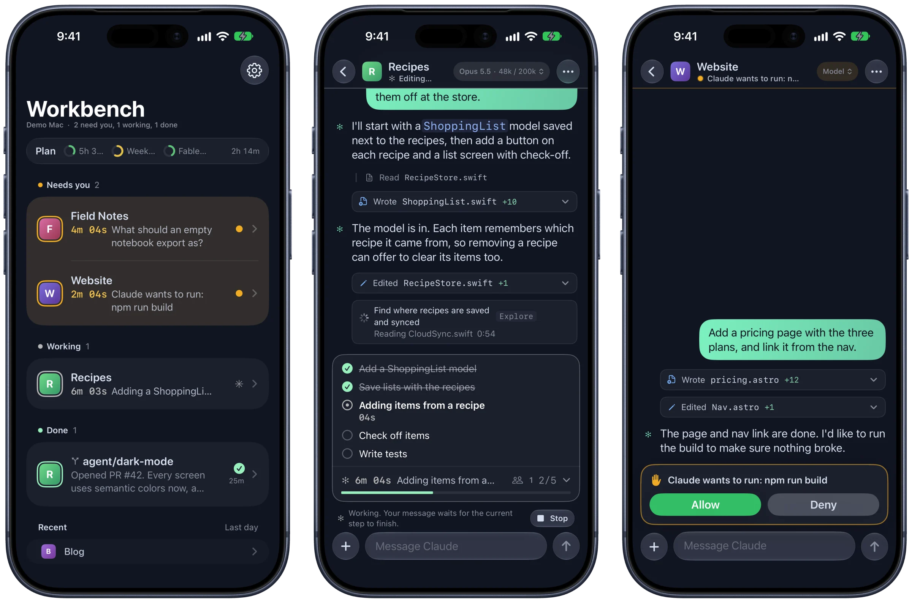

A coding interface for how we work today
Run Claude across all your projects, control Claude Code running on a headless Mac, and keep an eye on everything from your iPhone.
Terminal or chat. Same session.
Every Claude tab runs Claude Code in a real terminal, built on Ghostty, with your font and keybindings. Press ⌥⌘T and the same session turns into a chat: edits show as diffs, commands fold their output away, and questions and permission prompts become cards with real buttons.
- Slash commands autocomplete: built-in ones, yours, the project's, and your skills.
- Claude's suggested next message waits in the box. Press Tab to take it.
- Queue messages while Claude works, then edit, remove, or send them now.
- Subagents get cards that show what each one is doing right now.

Every project gets its own workspace.
Add a folder and Workbench gives it tabs for Claude, shells, files, diffs, and previews of your dev server. The sidebar shows each project's branch, pull request, and whether Claude is working, waiting on you, or done, with a one-line recap of what it last finished.
Projects sort themselves. Pin the ones you always want on top. The ones you're using sit under Active, and the rest fold away until you need them.

Watch the changes land.
The changes panel lists every file Claude touches, live, grouped by folder with additions and deletions. Click one for a full diff, and comment on lines to send notes back to Claude. The branch header shows how far ahead or behind you are, against whichever branch you pick.

Hand work to agents on their own branches.
Start an agent with a prompt and Workbench gives it a fresh git worktree on its own branch, so it can't step on what you're doing. Each one shows its status, its pull request, and whether checks passed. After a PR merges, Workbench follows the deploy on hosts like Vercel and Railway, then cleans up the worktree.
Brain Dump (⌥⌘N) starts several at once. Describe everything you want done, and Claude splits it into one task per project, each with a branch and a prompt you can edit. Nothing starts until you click Start.
36 themes to make it yours.
Pick one theme for light mode and one for dark, and Workbench switches with your Mac. The terminal, sidebars, chat, and diffs all take the theme's colors, and its accent color shows up on buttons, checklists, and your messages. Prefer your Ghostty theme? That works too.

Run it on a headless Mac. Drive it from anywhere.
Leave Workbench running on a Mac mini in the closet and work in its projects from your laptop's sidebar, as if they were local. Read and answer its sessions, start Claude tabs and agents, review its changes, and run its shortcuts, like the dev server. While an agent is working, Workbench keeps that Mac from going to sleep on its own.
The Macs connect over your own Tailscale network. Turn on Remote Access on the headless Mac, copy its pairing link, and paste it into the other one. The support page has the steps.
Keep up from your iPhone.
The iPhone app connects to your Mac over your own Tailscale network, with nothing in between. Sessions that need you sit at the top. Read along as Claude works, answer its questions, tap Allow or Deny, reply with a message or a photo, and review diffs from the couch. You can start new tabs and agents too.

Notifications you choose
Right-click a project on the Mac to hear when Claude needs you, when it finishes, and when checks and deploys are done.
A Lock Screen dashboard
Put every session on your Lock Screen at once, kept up to date by your Mac.
iPad too
The app is in beta on TestFlight, needs iOS 27, and runs as a full iPad app.
Built for the keyboard.
- ⌥⌘T
- Flip a Claude tab between terminal and chat
- ⌘0
- Every session in every project, in one grid
- ⌘J
- Jump to the next session that needs you
- ⌘K
- Go to any project or action
- ⌥⌘N
- Brain Dump: start agents across projects
- ⌘Y
- Pick up a past conversation
- ⇧⌘U
- What your sessions would cost at API prices
And from the shell.
Every tab Workbench opens has bench on its PATH, so you or Claude can talk to the app. Ask Claude to “tell me on my phone when the build finishes” and it knows what to do.
The small things.
Your plan's limits
Rings show your 5-hour, weekly, and per-model limits, grey until they need your attention.
Menu bar status
See what's working and what needs you without switching apps.
Other Macs
Pair a second Mac and work in its projects from the same sidebar.
Shortcuts
One-click buttons for commands you run all the time, plus a dev server button with port previews.
Your draft stays put
Text in the message box is still there when you switch projects and come back.
Updates itself
New versions download in the background and install when you quit.
Get started in a minute.
- Download Workbench and open it.
- Drag Workbench into your Applications folder.
- Open it. The welcome checks your Mac for what it needs, signs you in to Claude Code, and suggests projects from the folders you've already used.
Signed and notarized by Apple. Free to use.
You'll need
- A Mac with Apple silicon (M1 or later)
- macOS 26 or later
- Claude Code, installed and signed in
- git, from Apple's command line tools (Workbench offers to install them)
Nice to have
- The GitHub CLI for pull requests, checks, and deploys
- Tailscale for the iPhone app and other Macs